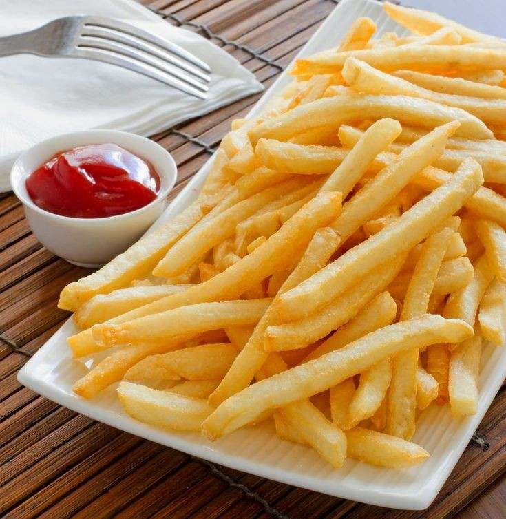

Cravings that you might also have
Food is one of the things that we like a lot, sometimes we eat just to passed time or maybe were just hungry that why we are craving for something to eat. These food are very appetizing and tasty to look at. Here are some food that we like.
1 / 5

2 / 5
I am always craving in this one, maybe a buy 1 take 1 will do for me, i can take it if its a huge size of burger.
3 / 5

Eating ice cream in summer was really a good idea since its really hot whenever you're inside of your home or not. Enjoying while you eat the ice cream without holding yourself back is incredible.
4 / 5
I am personally really addicted to this drink, I really enjoy those boba thing while drinking this cold milktea.
5 / 5